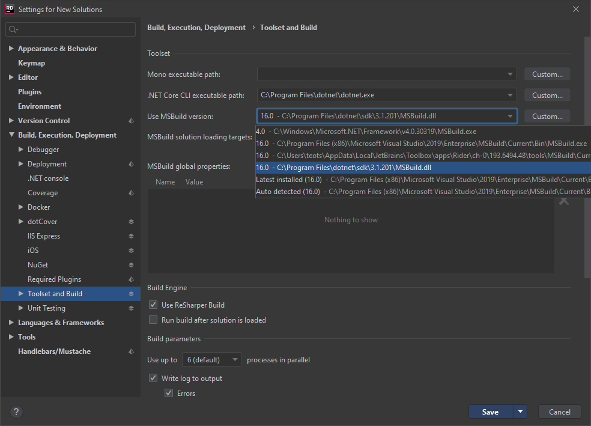

Farkle's precompiler
Every time an app using Farkle starts, it generates the parser tables. This process takes some time, and it take even more, if the app does not reuse the runtime Farkles it creates.
Most apps need to parse a static grammar whose specifications never change between program executions. For example, a compiler or a JSON parser will parse text from the same language every time you use it. Farkle would spend time generating the parsing tables that do not depend on user input and will always be the same. It wouldn't hurt a program like a REST server parsing hundreds of input strings, but for a compiler that parses only one file, building the grammar every time it is run would take some time, maybe more than the time spent for the parser, if the grammar is big.
What is more, Farkle does not report any grammar error (such as an LALR conflict) until it's too late: text was attempted to be parsed with a faulty grammar. Wouldn't it be better if these errors were caught earlier in the app's life cycle?
One of Farkle's new features that came with version 6 is called the precompiler. The precompiler addresses this inherent limitation of how Farkle works with grammars. Instead of generating it every time, the grammar's parser tables are built ahead of time and stored in the program's assembly, when it gets compiled. This significantly boosts the program's startup time by orders of magnitude.
How to use it
Using the precompiler is surprisingly simple and does not differ very much from regularly using Farkle.
Preparing the your code
Let's say you have a very complicated designtime Farkle that you want its grammar to be precompiled. The first thing to do is to use the RuntimeFarkle.markForPrecompile function. Here's an example in both F# and C#:
1: 2: 3: 4: 5: 6: 7: 8: 9: 10: |
|
1: 2: 3: 4: 5: 6: 7: 8: 9: 10: 11: 12: 13: 14: 15: 16: 17: 18: |
|
With this simple function (or extension method), Farkle will be able to discover this designtime Farkle in your assembly and precompile it. It will be able to actually find it if you follow these rules:
The designtime Farkle must be declared in a
static readonlyfield (not property). For F#, a let-bound value in a module is equivalent, but it must not be mutable.- The designtime Farkle's field can be of any visibility (public, internal, private, it doesn't matter). It will be detected even in nested types. Just remember the rule above.
- The designtime Farkle's field name must not start with an underscore. Because the precompiler will evaluate all designtime Farkles that satisfy the rule above, prepending an underscore to the field's name is an easy way to tell the precompiler to not touch it.
The
markForPrecompilefunction must be the absolute last function to be applied in the designtime Farkle.The
markForPrecompilefunction must be called in the assembly the designtime Farkle was created and should better not used from inside another function.
Say you have the following function in assembly A:
1: 2: 3: 4: |
|
And say you use the function above in assembly B. It won't work; Farkle won't be able to precompile the designtime Farkle. A solution would have been to make the function inline, but don't be 100% sure it will work.
- The field of the precompilable designtime Farkle must be either a typed or untyped designtime Farkle:
1: 2: 3: 4: 5: 6: |
|
All precompilable designtime Farkles within an assembly must have different names, or an error will be raised during precompiling. That's actually why the
DesigntimeFarkle.renamefunction was created.- Multiple references to the same precompilable designtime Farkle do not pose a problem and will be precompiled once. The following example will work:
1: 2: |
|
Note: If any of the rules above is violated, building your app will not fail (unless a name collision was detected which will always fail the build), the designtime Farkle will not be precompiled but will be otherwise perfectly functional.
Preparing your project
With our designtime Farkles being ready to be precompiled, it's time to prepare our project files. Add a reference to the Farkle.Tools.MSBuild package like that:
1: 2: 3: 4: 5: 6: 7: 8: 9: 10: 11: 12: |
|
If you compile your program now, you should get a message that your designtime Farkles' grammars got precompiled. Hooray! With our grammars being precompiled, calling RuntimeFarkle.build designtime (or buildUntyped) is now much, much faster.
Some final notes
Beware of non-determinism
Farkle's precompiler was made for grammars that are static, that's the reason it only works on static readonly fields: once you created it in your code, you cannot change it. Otherwise, what good would the precompiler be?
You can always call a non-deterministic function like DateTime.Now() that will make your designtime Farkle parse integers in the hexadecimal format in your birthday, and in the decimal format in all other days. If you build your app on your birthday, it will produce bizarre results on all the other days, and if you build it on a day other than your birthday, it will work every time, except of your birthday (the worst birthday present). Just don't do it. Farkle cannot be made to detect such things, and you are not getting any smarter by doing it.
Building from an IDE
And last but not least, the precompiler will not work when running a .NET Framework-based edition of MSBuild. This includes building from IDEs such as Visual Studio. The recommended way to build an app that uses the precompiler is through dotnet build and its friends. This doesn't mean that the precompiler won't work on .NET Framework assemblies; you have to use the new project format and build with the .NET Core SDK; it will normally work.
Note: Precompiling a .NET Framework assembly will load it to the .NET Core-based precompiler. While it sometimes works due to a compatibility shim, don't hold your breath that it will always work and you'd better not precompile designtime Farkles in assemblies that use .NET Framework-only features. It might work, it might fail, who knows? And why are you still using the .NET Framework?
Rider however can use the precompiler with a simple workaround. Open its settings, go to "Build, Execution, Deployment", "Toolset and Build", "Use MSBuild version", and select an MSBuild executable from the .NET Core SDK (it typically has a .dll extension).

So I hope you enjoyed this little tutorial. If you did, don't forget to give Farkle a try, and maybe you feel especially precompiled today, and want to hit the star button as well. I hope that all of you have an wonderful day, and to see you soon. Goodbye!